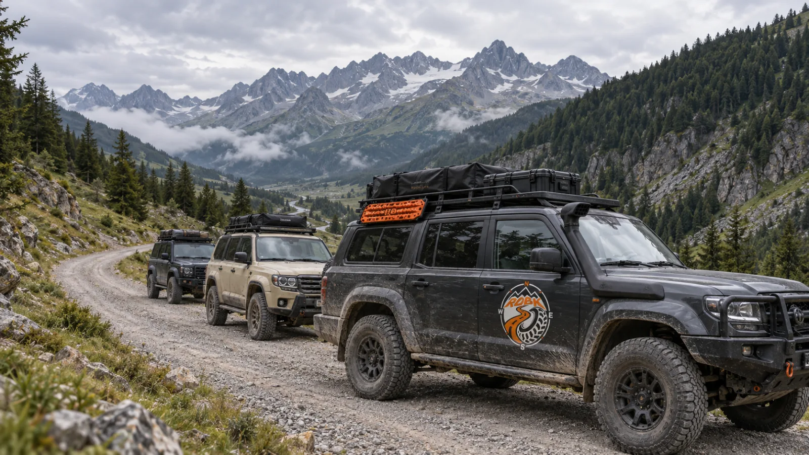

Beyond the asphalt
Digital roadbooks for 4×4 & overlanding.
Turn an expedition track into clear junctions, distances and landmarks. Prepare at home, record your reconnaissance and bring a shared route to the whole convoy.
A clear route for the whole convoy.
A GPX tells you where the track goes. A roadbook adds what matters at each junction: the exit to take, the distance since the last note and a landmark to recognise. RDBK brings that co-driver’s view to your 4×4 route, from a weekend club outing to a multi-day overland journey.
The tools behind the adventure

Roadbook Editor
Import a GPX or draw the route on the map. Add tulip junction diagrams, landmarks and CAP headings where they help, then keep the finished roadbook as a self-contained .rdbk file.
Discover the Editor
Roadbook Recorder
Scout the route with GPS recording. Mark junctions, take geotagged photos and capture voice notes so you can refine the instructions back at your desk.
Discover the Recorder
Roadbook Reader
Follow each note with total and partial distance, GPS position and heading. The co-driver sees the next instruction clearly; a printable PDF is also available from the roadbook preview.
Discover the ReaderBefore you set off
Can I prepare a roadbook for a 4×4 club outing?
Yes. Build and review the route in the Editor, then publish a public roadbook or attach it to an event. Event tools let organisers manage participants and the roadbooks they will follow. Each crew navigates the prepared instructions in the Reader.
Can I follow a roadbook without mobile data?
Open your roadbook before setting off. A .rdbk file contains its track, notes and symbols, and GPS positioning does not require mobile data. Online maps, downloading shared roadbooks and syncing your account still need a connection.
Browser or native app: which should I use?
Use the web Editor on a large screen to prepare your route. On the trail, the iOS and Android apps add background GPS, so a recording can continue with the screen locked. Use the same .rdbk roadbook across devices.